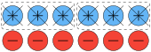

Section 9.2 Arithmetic With Integers
With the understanding of addition of integers and their models in Section 9.1, we turn to the other arithmetic operations on integers.
Subsection 9.2.1 Subtraction of Integers
Knowing how to add negative numbers and the Property 9.1.4 properties gives use the tools that we need to perform subtraction. Let’s start with with the example \(4 - (-2)\text{.}\)
As before, subtraction is defined as the missing addend. That is what fits in the box for
\begin{equation*}
-2 + \boxed{\; \rule{0pt}{9pt}} =4
\end{equation*}
Using the number line, we start at \(-2\) and determine the number of hops that results in 4. This can be shown with
Chip Models of Subtraction.
In Section 9.1, we also used chip models. These can also be used with subtraction when we use a takeaway interpretation. Returning to \(4 - (-2)\text{,}\) we will start with \(4\) positive chips and remove 2 negative chips. We start with 4 positive (blue) chips.
However, there are no negative chips. We use the Additive Inverse Property to add 0 to the model as \(2 + (-2) = 0 \text{.}\) This means including two additional blue and two additional red chips.
And lastly, cross out two negative (red) chips:
And the result shows 6 blue (positive) chip, so this shows \(4 - (-2)=6\)
Vector Models of Subtraction.
A vector model is also recommended to use with subtraction recalling that subtraction switches the direction. For example for \(4 - (-2)\text{,}\) we start with a vector from 0 to 4. To subtract, we general move in the other direction, however, since subtracting \(-2\text{,}\) this switches back as a vector in the positive direction.
This shows that \(4-(-2)=6\)
Patterns in Subtraction.
Similar to patterns in addition of integers, we can do the same with subtraction. If we start with what we know from subtracting positive integers and following the pattern into negative integers:
\begin{align*}
4 - 3\amp = 1\\
4 -2 \amp =2\\
4 -1 \amp = 3\\
4 - 0 \amp = 4\\
4-(-1) \amp = ?
\end{align*}
and looking at this pattern, it appears the last one will be 5. If we continue
\begin{align*}
4-(-1) \amp = 5\\
4 -(-2) \amp = 6\\
4 -(-3) \amp = 7
\end{align*}
Integer Subtraction Property.
From the models above, it appears that subtracting integers results in addition resulting in the following:
Subsection 9.2.2 Integer Multiplication
We next look at integer multiplication. We extend the ideas and models of integer addition to understand multiplication. Let’s first look at an example of \((3) \cdot (-2)\text{.}\) Recall that we can interpret this as repeated addition as
\begin{equation*}
(3) \cdot (-2) = (-2) + (-2) + (-2)
\end{equation*}
which we know from the Section 9.1 is \(-6\text{,}\) but using a number line, we can start at zero and perform three hops of size \(-2\text{.}\)
Chip Model.
We can also use the chip model to show multiplication of integers. To model \(3 \cdot (-2)\text{,}\) we can interpret this as 3 groups of size \(-2\text{,}\) and we will use red to model negative numbers.
The result is 6 negative (red) chips so \(3 \times (-2) = -6\text{.}\)
Next, let’s look at a model for \(-2 \times (3)\) . We are going to interpret this as removing 2 groups of 3 positive chips. This is a bit strange, but we are going to start with 0 for the model and then remove some chips. And we start with 6 pairs of positive and negative chips.
1
You as a fantastic mathematics student say to yourself “isn’t \(3 \times (-2) = -2 \times (3)\text{?}\)” and yes this is correct, but we are going to build to that.
Now we remove 2 groups of 3 positive chips (this is the \(-2 \times 3\) ).

And the chips left are 6 negative (red) chips so this shows that \(-2 \times 3 = -6\text{.}\)
Vector Model.
A vector model, like the chip model, uses the fact that multiplication is repeated addition. The model for \(3 \times (-2)\) uses three arrows, each of length 2, that point in the negative direction.
And as before, this shows that \(3 \times (-2) = -6\text{.}\)
Multiplication Properties.
The discussion above leads to the following multiplication properties.
Property 9.2.2.
Let \(a\) and \(b\) be integers. Then
\begin{align}
(-1)\cdot a \amp = -a \tag{9.2.1}\\
(-a)\cdot b \amp = a \cdot (-b) = -(a \cdot b) \tag{9.2.2}\\
(-a) \cdot (-b) \amp = a \cdot b \tag{9.2.3}
\end{align}
Subsection 9.2.3 Integer Division
Integer division results in fractions as seen in Property 7.2.4 or
\begin{equation*}
a \div b = \frac{a}{b}
\end{equation*}
when \(a\) and \(b\) are whole numbers, but how about if \(a\) or \(b\) or both are negative?
Recall that \(a \div b = c\) if \(c\) is the number such that
\begin{equation*}
a = bc
\end{equation*}
Property 9.2.3.
\begin{equation*}
-\frac{a}{b} = \frac{-a}{b} = \frac{a}{-b}
\end{equation*}
Subsection 9.2.4 Arithmetic Properties
We summary the arithmetic properties of the integers here. Let \(a, b\) and \(c\) be integers. Then the following hold:
- Additive Commutative
-
\(\displaystyle a+b=b+a\)
- Multiplicative Commutative
-
\(\displaystyle a \cdot b = b \cdot a\)
- Additive Associative
-
\(\displaystyle a+(b+c) = (a+b) + c\)
- Multiplicative Associative
-
\(\displaystyle a \cdot (b \cdot c) = (a \cdot b) \cdot c\)
- Distributive
-
\(\displaystyle a \cdot (b+c) = a \cdot b + a \cdot c\)
- Additive Identity
-
\(\displaystyle a+0 = a\)
- Multiplicative Identity
-
\(\displaystyle 1 \cdot a = a\)
Subsection 9.2.5 Arithmetic Proofs
This section covers the proofs of the properties that we have seen in this chapter. The crux of these proofs is that of Property 9.1.2. Since the right hand side of this property is zero, we are often going to add zero to a property that we want to prove.
Proof of Opposite Integers.
We start with \(-(-a)\) and the the sum of this and 0.
\begin{align*}
- (-a) \amp = -(-a) + 0 \\
\amp \qquad\qquad\text{replace $0$ with $-a+a$}\\
\amp = -(-a) + (-a) + a \\
\amp \qquad\qquad\text{The first two terms are opposites}\\
\amp = 0 + a \\
\amp = a
\end{align*}
Proof of Addition of a negative integer.
Answer:
\begin{align*}
a+(-b)+b\amp= a \\
a + 0\amp= a \\
a\amp= a
\end{align*}
so the missing factor is \(a+(-b)\text{,}\) therefore
\begin{equation*}
a+(-b)=a-b
\end{equation*}
Proof of Subtraction of Integers Property.
Since we are trying to rewrite a subtraction, we will recall that it is the missing addend. That is \(a-c = d\) is the same as \(a = c+ d\)
\begin{align*}
a + b \amp = a + b \\
a + b - (b + (-b)) \amp = a + b \\
a + (b -b) - (-b) \amp = a + b \\
a + 0 - (-b) \amp = a+ b
\end{align*}
Proof of Rule 3.
\begin{align*}
-a \cdot b \amp = -a \cdot b + 0 \\
\amp = -a \cdot b + (a \cdot b) - (a \cdot b) \\
\amp = (-a + a) \cdot b - (a \cdot b) \\
\amp = 0 \cdot b - (a \cdot b)\\
\amp = 0 - (a \cdot b) \\
\amp = - (a \cdot b)
\end{align*}
Proof of Rule 5.
Let \(x=\dfrac{a}{b}\text{,}\) then \(bx=a\text{.}\) We need to show that
\begin{align*}
-x\amp= \dfrac{-a}{b}\qquad\text{or equivalently} \\
(-x) \cdot b\amp= -a
\end{align*}
\begin{align*}
-a\amp= -(bx) +(x+(-x))b \\
\amp= -(bx) + (bx) + (-x)b \\
\amp= (-x) b
\end{align*}
Since
\begin{equation*}
-a = (-x) b
\end{equation*}
then
\begin{equation*}
-x = \frac{-a}{b}
\end{equation*}
so
\begin{equation*}
-\frac{a}{b} = \frac{-a}{b}
\end{equation*}
Exercises 9.2.6 Exercises
1.
For each of the following subtraction problems, show with a i) a chip model and ii) a vector model.
(a)
\(7 - (-4)\)
(b)
\(-2 -(3)\)
2.
3.
For each of the multiplication problems listed below, develop a chip model. Note: if the first number is positive, then consider it as repeated addition. If the first number is negative, perform a takeaway interpretation of some number of groups.
(a)
\(4 \times (-3)\)
(b)
\(-3 \times 4\)
(c)
\(-3 \times -4\)
4.
For each of the multiplication problems listed below, develop a vector model. Note: if the first number is positive, then consider it as repeated addition. If the first number is negative, use the opposite notion as shown above.
(a)
\(4 \times (-3)\)
(b)
\(-3 \times 4\)
(c)
\(-3 \times -4\)
5.
Find the resultant integer or fraction of the following division problems. If the result is a fraction, write in reduced form.
(a)
\(7 \div (-2)\)
(b)
\(-8 \div 4\)
(c)
\(6 \div (-2)\)
(d)
\(-8 \div (-6)\)